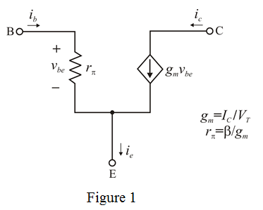
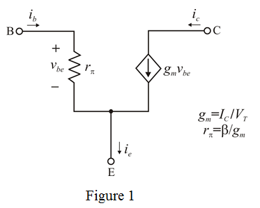
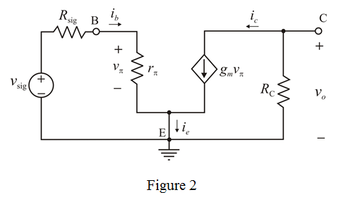

Refer to the Figure P6.97 in the text book.
Draw the following hybrid- equivalent circuit of BJT.
equivalent circuit of BJT.

Refer to the Figure P6.97 in the text book.
Draw the following hybrid- equivalent circuit of BJT.

Replacing hybrid- equivalent circuit of BJT in Figure 1 gives,
equivalent circuit of BJT in Figure 1 gives,

Write the expression of  using Figure 1.
using Figure 1.
Therefore, the input resistance of the amplifier is.
Apply Kirchhoff’s voltage law to the left side loop in Figure 2.
Therefore, the voltage transmission from source to the amplifier input is  .
.
Apply Ohms law in right side circuit in Figure 2.
Therefore, the voltage gain from base to collector is.
Therefore, the expression for overall voltage gain of the amplifier is proved.